Csoport neve: EOF
Feladat sorszáma: 3
Feladat címe: Társasjáték készítő platform
SRS
Gyakorlatvezető:
Mileff Péter
Csoporttagok:
|
Név |
Neptunkód |
E-mail cím |
|
Baba Levente |
HLFA5R |
babalevi2018@gmail.com |
|
Erdélyi Péter |
JH3V7T |
petike096@gmail.com |
|
Halász Máté Sándor |
T1TNWL |
maseny0@gmail.com |
|
Molnár Márk |
TLZ12Y |
molnar.mark.144@gmail.com |
|
Soltész Viktor |
F2UJS6 |
solteszviktor01@gmail.com |
2024. november 03.
Verziótörténet
|
Verzió |
Leírás |
Szerző |
|
|
2024. 10. 17. |
0.1 |
Tervezési korlátozások és alkalmazott szabványok |
EOF |
|
2024. 10. 26. |
0.2 |
A use-case diagramok felvázolása egyes felek részére |
Halász Máté Sándor |
|
2024. 10. 26. |
0.2.2 |
Felhasznált kész komponensek szerkesztése (Amazon S3, Authy) |
Baba Levente |
|
2024. 10. 27. |
0.2.4 |
Felhasznált kész komponensek szerkesztése (Google, Facebook, Stripe) |
Baba Levente |
|
2024. 10. 28. |
0.3 |
Követelményrendszer (használhatóság, megbízhatóság) kidolgozása |
Erdélyi Péter |
|
2024. 10. 28. |
0.5 |
A flow use-case diagramok kidolgozása és részletezése |
Halász Máté Sándor |
|
2024. 10. 29. |
0.7.1 |
A use-case diagramok fejezet véglegesítése |
Halász Máté Sándor |
|
2024. 10. 31. |
0.8 |
Követelményrendszer (teljesítmény, támogatottság) kidolgozása |
Erdélyi Péter |
|
2024. 11. 01. |
0.9 |
Online dokumentáció és help rendszer kidolgozása |
Erdélyi Péter |
|
2024. 11. 03. |
1.0 |
Interfészek kidolgozása, a dokumentum véglegesítése |
Erdélyi Péter, Halász Máté Sándor |
Tartalomjegyzék
2.2. A termék legfontosabb funkciói
2.5. Feltételezések és függőségek
2.6. A követelmények csoportosításának szempontjai
3.1.1. Új felhasználó (látogató)
3.1.2. Regisztrált felhasználó
3.1.3. Előfizetett felhasználó
9. Online dokumentáció és help rendszer
10. Felhasznált kész komponensek
10.1.1. A választás szempontjai
10.1.3. A komponens használatának előnyei
10.1.5. Az integrációs folyamat lépései
10.2.1. A választás szempontjai
10.2.3. A komponens használatának előnyei
10.2.5. Az integrációs folyamat lépései
10.3.1. A választások szempontjai
10.3.2. A komponensek hátterei
10.3.3. A komponensek használatának előnyei
10.3.5. Az integrációs folyamat lépései
10.4.1. A választás szempontjai
10.4.3. A komponens használatának előnyei
10.4.5. Az integrációs folyamat lépései
11.1. Felhasználói interfészek
11.3. Szoftveres és kommunikációs interfészek
Jelen szoftverkövetelmény-specifikáció (SRS) dokumentum célja, hogy egy részletes leírást adjon a ,,Crafting Table” elnevezésű webes platform működésével kapcsolatban. Az SRS megfogalmazza a rendszerrel szemben támasztott funkcionális és nem funkcionális követelményeket. Tartalmazza az applikáció tervezését érintő korlátozásokat, valamint kitér arra is, hogy a rendszert milyen interfészek alkotják, és hogy az applikáció miként létesít kapcsolatot más külső rendszerekkel. A dokumentum olvasóközönsége közé tartoznak egyrészt a felhasználók, akik meggyőzödhetnek róla, hogy a Crafting Table valóban megfelel az elvárásoknak, másrészt az EOF fejlesztői gárdája, akiknek az SRS egy kiindulási pontot jelent a projekt első verziójának megvalósításához.
Manapság a társasjátékok térhódítása egyre nagyobb jelentőséggel bír. A felgyorsult világunknak köszönhetően ugyanakkor folyamatosan nehezedik a sok résztvevős társasjáték alkalmak szervezése, mindemellett az elérhető játékok széles kínálata egyre inkább háttérbe szorítja a nagyon egyedi tervezésű társasjátékok alkotását. Ezekre a problémákra szándékozik megoldást nyújtani a Crafting Table, amely a vetélytársak hasonló alternatíváihoz képest alacsonyabb erőforrás-igényű, lényegesen kevesebb hozzáértést követel meg a felhasználóktól, és számtalan olyan kisegítő funkciót biztosít a korlátozott képességűek részére, amely a konkurens platformokon csak részben található meg, vagy azokról teljes egészében hiányzik.
A Crafting Table célközönsége a fiatal felnőttek korosztálya, illetve indie fejlesztők és stúdiók. A felhasználóknak lehetőségük van saját társasjátékok készítésére, azon belül pedig minden alkotóelemet személyre szabhatnak. A kész társasjátékok a felhasználó egyéni könyvtárába kerülnek lementésre, ahonnan megoszthatják őket a workshop-ban, vagy akár mérkőzést is tudnak velük indítani. Indie vállalkozások esetében kiemelten fontos a prototípus társasjátékok tesztelése, az azokról kapott visszajelzések. Az üzleti szerződés lehetővé teszi nekik, hogy különböző promóciókat hirdessenek, ami által népszerűsíthetik a saját fizikai terméküket. A platform egyéb felhasználói közé sorolható még a technikai személyzet is, mint például a moderátor, weblapszerkesztő, vagy éppenséggel az EOF valamelyik fejlesztője. Ezen egyének ügyelnek a weboldal karbantartására, a nem megfelelő tartalmak szűrésére, és így tovább.
A követelmények feltárásának folyamata során az alábbi referenciákat vettük alapul:
[1] EOF: Projektterv
[2] EOF: Vízió
[3] Mileff P.: Software követelmény analízis (SRS) dokumentum minta (https://users.iit.uni-miskolc.hu/~mileff/szt/srs.html)
A bevezetésben tárgyalt problémákra mi egy megoldást biztosítunk azzal, hogy az emberek és cégek számára egy olcsó, webes alapú applikációt adunk, amiben több tíz társasjáték érhető el alapértelmezettként, továbbá lehetőséget adunk arra, hogy a saját ötleteiket megvalósítsák egy fejlesztői felület segítségével. Ez a koncepció közel sem egyedi, hiszen számos más fejlesztői csapat csinált már ehhez hasonló társasjáték fejlesztő és játszói programot, mint például: Tabletop Simulator, Tabletop Playground, valamint egy pár webes felület, mint a Screentop.gg vagy éppenséggel a FoundryVTT vagy Roll20, ezen utóbbiak viszont az RPG játékokra specializálódnak.
Ahogyan az előbb említettük, a Crafting Table platform alapgondolata nem teljesen egyedülálló, mert a piacon már fellelhető néhány hasonló alternatíva. A gond ezekkel a programokkal azonban a magas gép- és hozzáértés igényük. A vetélytársak alkalmazásai gyakran megkövetelik a felhasználóktól, hogy jártasak legyenek valamilyen szkriptnyelv írásában a játékszabályok kreálásához, vagy olyan hardveres elvárásokat támasztanak, amely a felhasználók egy bizonyos rétegének nehézséget okoz a futtatásnál. Mindemellett rendszeresen hiányoznak olyan funkciók, amelyek a fogyatékkal élők részére kritikusak, hogy a programot ők is hátrányok nélkül tudják használni. A mi applikációnk ezekkel ellentétben egy tökéletes vonalat húz a komplexitás és az egyszerű használhatóság között, a megunhatatlan vizuális kinézet és az alacsony gépigény között.
A Crafting Table egy könnyen kezelhető, felhasználóbarát környezetet nyújt mindazok számára, akik a barátaikkal szeretnének társasjátékokat játszani, valamint akik próbára tennék saját játék dizájn tudásukat, és alkotnának egy saját társasjátékot. A társasjáték tervező használatához nem szükséges semmilyen programozói tudás; előre elkészített sémák segítségével és azok manipulálásával, illetve személyre szabható elemek hozzáadásával történik a fejlesztés. Összegezve: a Crafting Table mind egy játékfelületet, mind egy fejlesztői felületet biztosít a felhasználók részére.
2.2. A termék legfontosabb funkciói
A Crafting Table az alábbi főbb komponensekből tevődik össze:
1. szerkesztő (editor):
v játékmenet manipulálása
v győzelem és vereség feltételeinek meghatározása
v erőforrások nyomon követése
v játéktér szerkesztése
v számtalan játékelem (kártyák, zsetonok, kockák, bábuk stb.) támogatása
2. mérkőzés lebonyolító (session manager):
v session létrehozása
v sessionkezelés (meghívók, szüneteltetés, visszatöltés)
v írásos chat használata
v élő közvetítés lehetősége (mikrofon és/vagy webkamera)
3. böngésző (workshop):
v műveletek: rendezés, keresés, szűrés
v mások tartalmai: letöltés, értékelés, kommentelés, hibajelentés
4. könyvtár (library):
v saját társasjátékok: leírás, fényképek, címkék
v letöltött társasjátékok: kedvencek, workshop link, értékelés
A Crafting Table platformon várhatóan megjelenő felhasználók az 1. táblázatban szerepelnek.
|
Elnevezés |
Leírás |
Szerep |
|
Előfizetés nélküli felhasználó |
Ingyenes funkciók használata |
Társasjátékokat szerkeszt, azokat esetlegesen megosztja. Böngészik a workshop felületén. Session-öket indít vagy azokba csatlakozik. |
|
Előfizetéses felhasználó |
Prémium funkciók használata |
Megegyezik az előfizetés nélküli felhasználóval, de olyan kiegészítő szolgáltatásokat is igénybe vesz, amihez előfizetés hiányában nem férhet hozzá. |
|
Cégek, vállalkozások |
Üzleti partner |
Teszteli a prototípus társasjáték működését. Visszajelzést kap a felhasználóktól. Promóciót hirdet, hogy népszerűsítse a fizikai terméket. |
1. táblázat: A felhasználók összefoglalása
Ahhoz, hogy a projektünket az elvárható minőségben tudjuk szállítani, a következő technikai megszorításokat szükséges tenni:
· Az alkalmazásnak egy böngészőben kell tudni futnia, ezért az optimalizálást előtérbe kell helyezni.
· Android és iOS operációs rendszerek támogatásához további tényezők figyelembevétele szükséges (pl. képernyőméretek, fogyasztás).
· A Crafting Table-t úgy kell megtervezni, hogy azt hátrányos helyzetűek is képesek legyenek használni.
· A társasjáték készítőt egy átlagos felhasználónak is tudnia kell kezelni, vagyis az editor programrészét nagyon alaposan le kell tesztelni, hogy a játékelemek manipulációja ne igényeljen előzetes tudást.
· Ügyelni kell a szerverstabilitásra, hogy a rendszer képes legyen egyidejűleg 3000 felhasználót elbírni.
2.5. Feltételezések és függőségek
A projekt teljesítéséhez kapcsolódóan feltételezzük, hogy:
· a projekt befejezése legfeljebb 2-3 évet vesz igénybe,
· az alapító tagok közül nem távozik senki a projekt vége előtt,
· a felhasználható pénzügyi keretet nem lépjük túl.
Technikai függőségeket okozhatnak az alábbiak:
· Android és iOS operációs rendszerek támogatása,
· Google, Facebook és Discord platformok integrálása,
· a fejlesztéshez használt nyelvek és könyvtárak (pl. Node.js, React) megszűnése.
2.6. A követelmények csoportosításának szempontjai
A funkcionális és nem funkcionális követelményeket a FURPS+ modell alapján csoportosítottuk, ahol a kezdőbetűk jelentése:
· Functionality (funkcionalitás): legfontosabb funkciók, újrahasznosíthatóság, biztonság.
· Usability (használhatóság): esztétikai megjelenés, emberi tényezők, hozzáférhetőség.
· Reliability (megbízhatóság): elérhetőség, hibatűrés.
· Performance (teljesítmény): sebesség, áteresztőképesség, hatékonyság.
· Supportability (támogatottság): lokalizáció, karbantarthatóság.
A ,,+” a modellt kiterjeszti más egyéb szempontokra is, mint például tervezési korlátozások, felhasznált interfészek és alkalmazott szabványok. A jelen dokumentum hátralévő részében a fenti követelményrendszer kidolgozásával foglalkozunk.
A felhasználókat külön kategóriákba soroltuk a diagram egyszerűbb olvashatósága érdekében, viszont ebben az első esetben az új és regisztrált felhasználókat egybevettük. Az új és regisztrált felhasználók use-case diagramja az 1. ábrán látható.
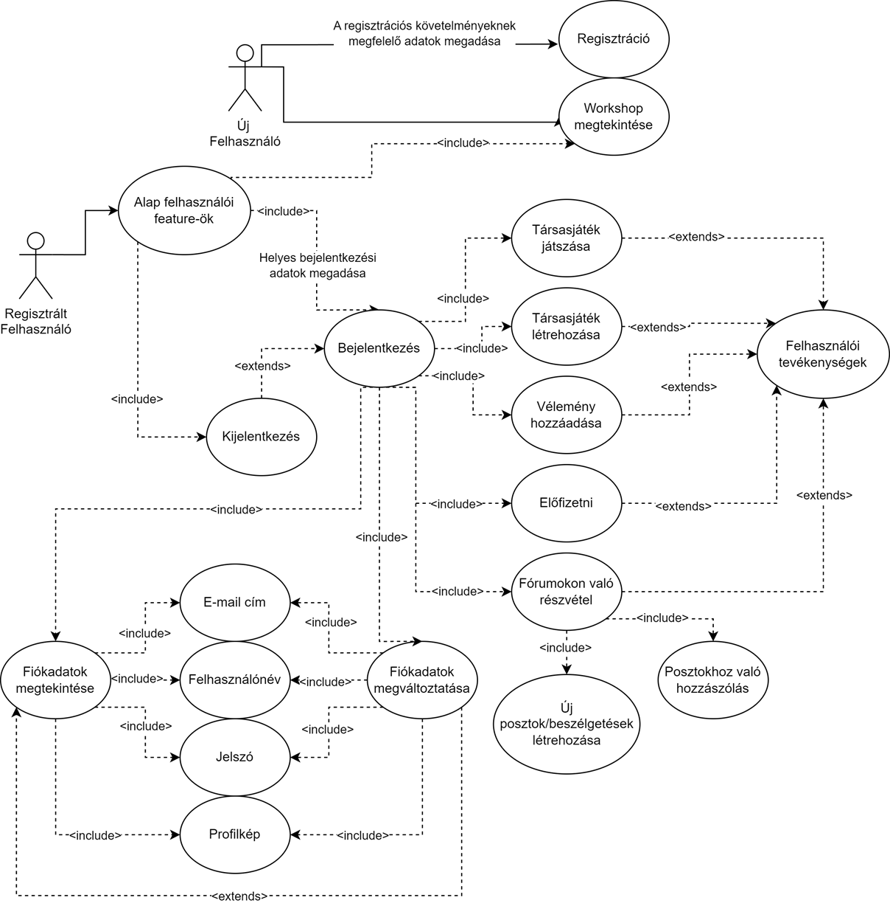
1. ábra: Új és regisztrált felhasználók
3.1.1. Új felhasználó (látogató)
Egy új felhasználó számára a weboldal lehetőséget nyújt a regisztrációra akár többféle módon (a későbbi ábrákon majd ezt bővebben kifejtjük), valamint a workshop oldal megnyitására, ahol a felhasználók által létrehozott társasjátékok között tud nézelődni, viszont azokat nem tudja elindítani, és nem tud véleményt írni hozzá. Ez is a regisztrációra való ösztönzés része. Ha a látogató meglát valamit, ami felkelti az érdeklődését, akkor nagyobb eséllyel fog majd regisztrálni és felhasználóvá válni.
3.1.2. Regisztrált felhasználó
Egy regisztrált felhasználó számára a weboldal lehetőségei egyértelműen kibővülnek. Ő hozzáférést kap az ún. ,,Alap felhasználói feature-ök”-höz, amelynek része az oldalra való bejelentkezés, ezt követően elérhetővé válnak az alábbiak:
· társasjátékok játszása,
· társasjátékok létrehozása,
· vélemény írása,
· workshop megtekintése és böngészése,
· előfizetés a prémium jogokra,
· fórumokon való részvétel.
Ezenfelül, ha a felhasználó számára már nem elég személyesek a regisztrációkor megadott információk, azokat megváltoztathatja.
3.1.3. Előfizetett felhasználó
Ebbe a kategóriába tartoznak azon felhasználók (regisztrált emberek), akik valamelyik előfizetési opciót választották. Az előfizetett felhasználó use-case diagramját mutatja a 2. ábra.
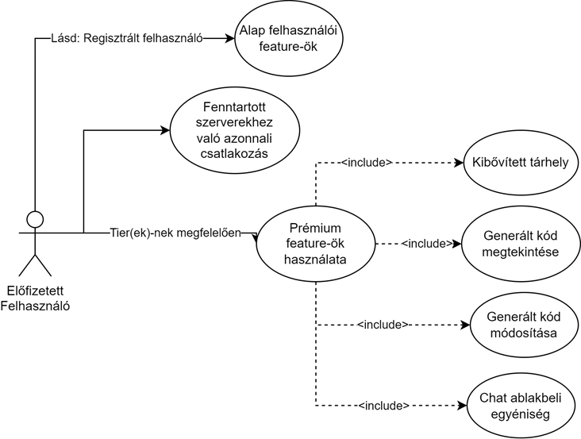
2. ábra: Előfizetett felhasználó
Az előfizetett felhasználók mindannyian hozzáférnek a regisztrált felhasználók által elérhető ,,Alap felhasználói feature-ök”-höz, továbbá egy, a fejlesztői csapat által fenntartott szerverhez, amely megkönnyíti a játékok host-olását (indítását) és leveszi a terhet a felhasználó gépéről. Ezenfelül hozzáférést kapnak prémium jogosultságokhoz, amelyek előfizetési tier (opció) függőek: például egy 1-es opciót választó felhasználó kevesebb kibővített tárhelyet fog kapni, mint egy 3-as opciót választó felhasználó. Az előfizetéseknek 3 opciója lenne, ami minden felhasználó számára elérhető.
A szerződtetett fél opció előfizetéseknél egy speciális réteg lenne, amit nem kaphat meg akárki. Ezt az opciót meghagyjuk a feltörekvő vagy a piacon már régen kint lévő társasjáték készítő cégek számára. A ,,cég” kifejezést itt laza értelemben használjuk, mivel nem feltétlen szükséges a személy(ek)nek ténylegesen egy céget alkotnia. A megkötések ennél az opciónál abból adódnak, hogy a fél, aki számára kiadjuk ezt a lehetőséget, valójában egy szerződést írnak alá, amiben beleegyeznek, hogy a weboldalunkon létrehozott játékot teljes mértékben személyre szabhatják, kaphatnak visszajelzéseket a közösség által, és egy kiemelt helyet a workshop felületen. Ez mind a szerződtetett félnek, mind nekünk, az applikáció készítőinek javára válik. Egy interjú keretein belül felmérjük a fél szándékait, és megbeszélünk egy időkeretet, ameddig a szerződés tart. Ha a szerződés lejártával tovább akarják fenntartani a jogviszonyt, akkor egy megbeszélés mellett egy újabb időkeretet megszabunk.
A szerződtetett felet a 3. ábrán vázoltuk fel.
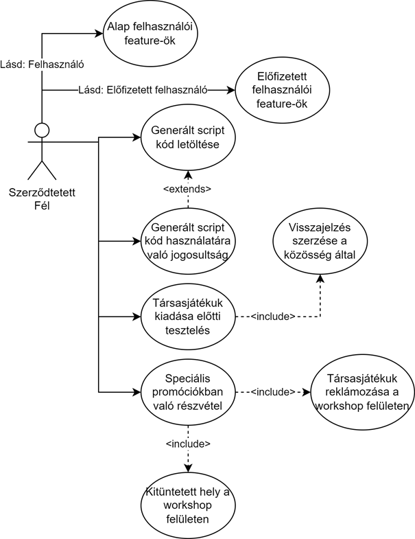
3. ábra: Szerződtetett fél
A szerződtetett fél hozzáfér az eddig felsorolt ,,Alap felhasználói feature-ök”-höz, a ,,Prémium jogosultságok”-hoz, valamint a jobb testreszabhatóság érdekében nemcsak a generált script kódjának módosításához, de annak letöltéséhez és más projektbeli felhasználhatóságához is; lényegében a fél azért is fizet, hogy a mi programunk által generált kódot és alapot felhasználhassa a saját projektjében. Ez eddig mind nagyon jövedelmező egy feltörekvő fél számára, viszont említettük, hogy a piacon már régóta jelen lévők számára is nyitott ez az opció. Ezen felek számára a ,,Speciális promóciókban való részvétel” függelék az érdekes. A társasjátékuk reklámozását ajánljuk fel, ami a workshop felületen biztosítja azt, hogy az ő játékuk fog legfelül megjelenni. Természetesen nem az összes ilyen fél játékát fogja felsorolni, mert az sok helyet foglalna el, hanem az algoritmusunk mindig kiválaszt az értékelések és játékidő alapján 4 játékot, és azokat egy színes kerettel veszi körbe, hogy a felhasználók számára szembetűnő legyen. Emellett más promóciós együttműködésekre is adunk még lehetőséget.
A felhasználók minden lépését a moderátorok figyelik, az ő feladatuk az, hogy biztosítsák a felhasználók közötti rendet és a weblap biztonságos működését. A moderátorok használati eseteit szemlélteti a 4. ábra.
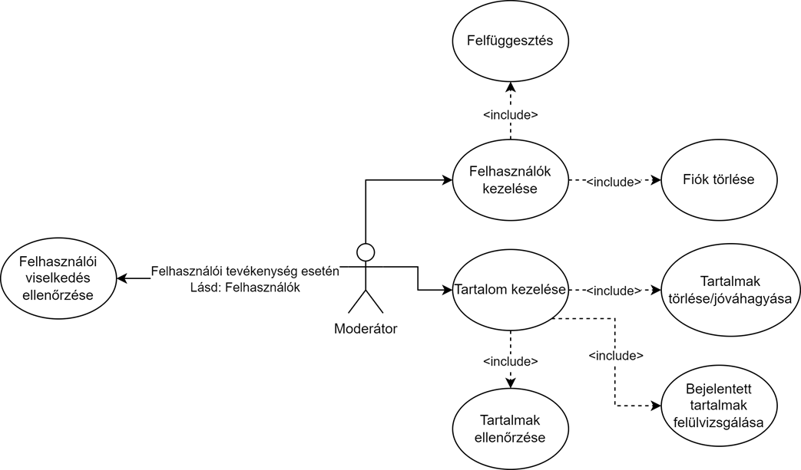
4. ábra: Moderátor
A moderátorok jogában áll a felhasználók fiókjait, valamint a felhasználók által feltöltött tartalmakat kezelni. A felhasználói fiókok kezeléséhez tartozik a:
· Fiók felfüggesztése: Abban az esetben, ha a felhasználó megsértette a szabályok egyikét, ám a moderátor megállapította, hogy a szabálysértés nem okozott maradandó kárt, vagy nem volt annyira súlyos, úgy dönthet a felhasználói fiók felfüggesztéséről. Egy felfüggesztés a szabálysértés súlyosságától függ, és tarthat pár naptól egészen akár egy évig is. Ebben az időszakaszban a felhasználó nem tud belépni a fiókjába, továbbá meg lesz bélyegezve.
· Fiók törlése: Ha egy megbélyegzett felhasználót túl sok szabálysértésen kapnak, vagy egy még meg nem bélyegzett felhasználó egy nagyon súlyos szabálysértést követ el, a felhasználó fiókját lehet, hogy törlik. Ebben az esetben a felhasználónév és az e-mail mind tiltásra kerülnek az adatbázison belül, hogy megakadályozzuk a jövőbeli visszatérését.
A felhasználók által létrehozott tartalmakhoz szintén megszabtunk olyan szabályokat, melyek megsértése következményekkel jár. Ezeknek a kivizsgálása a következőképpen történik:
· Bejelentett tartalmak felülvizsgálása: Ha egy felhasználó a böngészése során egy kifogásolható tartalomba ütközött, azt be tudja jelenti, ezek a bejelentések pedig mind megjelennek a moderátorok felületén, és emberi felülvizsgálásra kerülnek. Ez az első fázis a tartalmak moderálásában.
· Tartalmak ellenőrzése: Nemcsak felhasználók által bejelentett tartalmakat tudnak felülvizsgálni, hanem egy, az ellenőrző algoritmus által észlelt, vagy akár egy moderátor által talált tartalmat is ellenőrzés alá lehet vetni.
· Tartalmak jóváhagyása/törlése: Az ellenőrzési fázis befejeztével a moderátor dönthet úgy, hogy a tartalmat jóváhagyja vagy törli. Jóváhagyásnál a tartalom ,,biztonságosként” lesz elkönyvelve. Törlésnél viszont a szabálysértés súlyosságától függően maga a felhasználó után is eljárás indulhat.
A közösség menedzserek állnak a legszorosabban magához a közösséghez, mivel az ő feladatuk a visszajelzések kezelése és a megfelelő felhasználói élmény nyújtásához szükséges segítség megadása. Ezeknek a személyeknek a use-case diagramját ismerteti az 5. ábra.
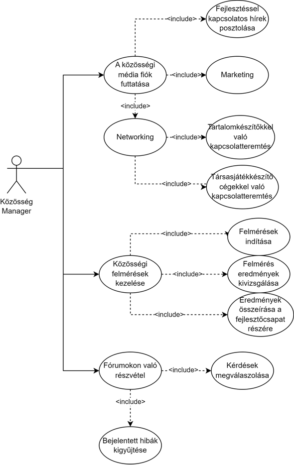
5. ábra: Közösség menedzser
A közösség menedzsereknek 3 feladatuk van:
· A közösségi média fiók(ok) futtatása:
v A közösségi médiákon való jelenlét nagyon fontos a mai világban, mivel az emberek nagy része már rendelkezik egy közösségi média fiókkal, amit szinte minden nap néznek, ezért ez egy megfelelő médium számunkra, hogy a közösséget mindig tájékoztassuk a legfrissebb hírekkel kapcsolatban a fejlesztés során.
v Egy másik fontos része a közösségi médiáknak a marketing lehetőségek. Reklámhelyek vásárlása, vagy csak az emberek tetszésének elnyerése vicces posztokon keresztül.
v Végül a networking lehetőségek; tartalomgyártókkal vagy társasjáték cégekkel való kapcsolatfelvétel és együttműködési lehetőségek.
· Közösségi felmérések lebonyolítása: Fontos számunkra, hogy a játékosaink a legjobb felhasználói élményt kapják, így minden egyes frissítés után tervezünk felméréseket tartani, amiben kikérdezzük a véleményüket az újonnan hozzáadott tartalmakról. Ezen felmérések lebonyolítása, kiértékelése és a fejlesztők felé való továbbítása is a közösségi menedzserek munkája. A felmérések általában a fórumokon fognak zajlani, ami egy hely a felhasználók számára, hogy ötleteket adjanak egymásnak, beszélgessenek a projektjeikről és hibákat jelentsenek be.
· Fórumokon való jelenlét: Mivel maguk a felmérések is a fórumokon zajlanak, ezért a közösségi menedzserek maguk is jelen vannak a fórumokon, és ahol látnak egy megoldatlan hibát vagy kérdést, egyből meg tudják válaszolni (vagy jóvá tudnak hagyni egy, a felhasználók által írt választ), hogy biztosítsák a megfelelő felhasználói élményt, segítsék a program akadálymentes használatát, továbbá a fórumokon posztolt hibákat össze tudják gyűjteni és azt továbbítani a fejlesztők részére.
A weblapszerkesztő feladata a weblap karbantartása és biztonságos használatának biztosítása. A használati eseteket a weblapszerkesztőknél a 6. ábrán tüntettük fel.
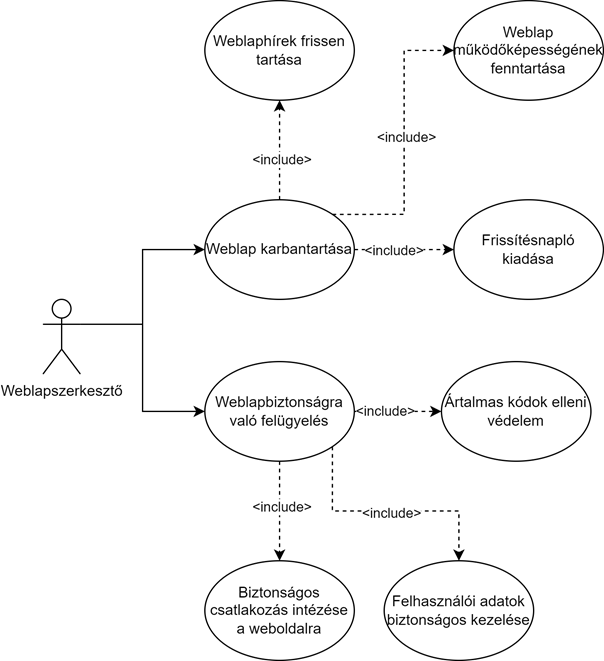
6. ábra: Weblapszerkesztő
Ahogy az ábra is mutatja, a karbantartás magában foglalja a:
· hírek frissen tartását, hogy a közösség mindig naprakész tudjon maradni a fejlesztés során;
· működőképesség fenntartását, hogy a felhasználó kényelmesen és zökkenőmentesen tudjon navigálni a weboldalunkon, és minden pontosan és szépen jelenjen meg;
· valamint a frissítési napló kiadását, ami ugyan egy kisebb feladat, mivel ő csak azt biztosítja, hogy a frissítési naplókat a felhasználók sorrendben meg tudják tekinteni (legújabbtól a legrégebbig), és a weboldalon szépen, olvashatóan jelenjen meg, de ez is fontos.
A weblapbiztonság egy másik nagyon lényeges feladata a weblapszerkesztőnek, mondhatni a legfontosabb, mivel ez teszi lehetővé, hogy a felhasználó adatai ne váljanak támadás áldozatává. A weblapbiztonság magába foglalja a(z):
· ártalmas kódok elleni védelem kiépítését;
· felhasználók adatainak biztonságos kezelését, beleértve azok tárolását és felhasználását;
· valamint a biztonságos kapcsolat létrehozását a felhasználó és a szerver között.
Az előző pontban már megemlítettük a frissítési naplót, melynek kiadása a weblapszerkesztő feladata, viszont a napló vezetése és annak olvasható formátumba való összeírása a szerkesztő feladatköréhez tartozik; viszont ez nem az egyetlen szerkesztői feladat, amit ő ellát. A szerkesztő feladatkörének értelmezéséhez tekintsük a 7. ábrát.
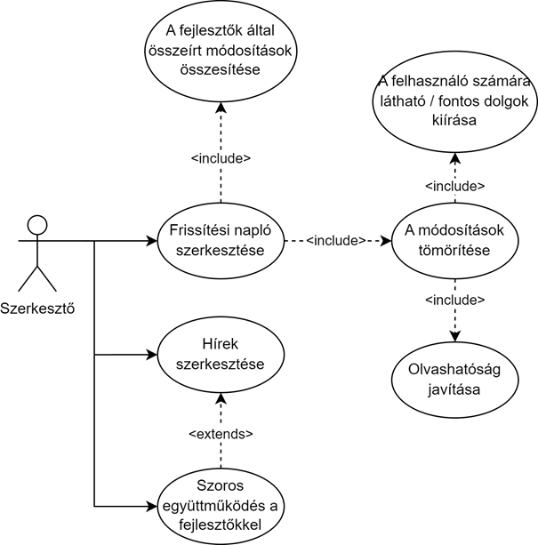
7. ábra: Szerkesztő
A frissítési napló szerkesztése egy többlépcsős feladat:
· Először is a szerkesztő átolvassa a fejlesztők által összeírt módosításokat. Ez általában egy ömlesztett, száraz és ,,nehezen olvasható” dokumentum, ami csak kilistázza a változtatásokat, amiket ebben a verzióban eszközöltek.
· Másodszor ezeket a módosításokat ,,tömöríti”, ami alatt azt értjük, hogy a változtatások közül kiválogatja a felhasználó számára legfontosabbakat (pl.: egy új gomb hozzáadása, annak funkciója; vagy éppen egy funkció eltávolítása), és ezeket mind egy könnyen olvasható, példákkal és képekkel ellátott dokumentumba helyezi, amit továbbít a weblapszerkesztő részére.
· Ezenkívül a szerkesztő a hírek összeszerkesztésében is fontos szerepet játszik. Szoros együttműködésben vannak a fejlesztőkkel, így biztosítják azt, hogy a közösség mindig a legfrissebb és legpontosabb híreket kapja a fejlesztés során.
A weblapot egy látogató (nem regisztrált felhasználó) is meg tudja tekinteni, és még a workshop felületre is betekintést nyer, ugyanakkor nagyon sok funkcióhoz, az alap felhasználói feature-ökhöz nem kap hozzáférést, mint ahogy azokat a Felhasználók részben fel is soroltuk. Éppen ezért most a regisztráció lépéseit fogjuk bemutatni, amit a 8. ábra jelenít meg.
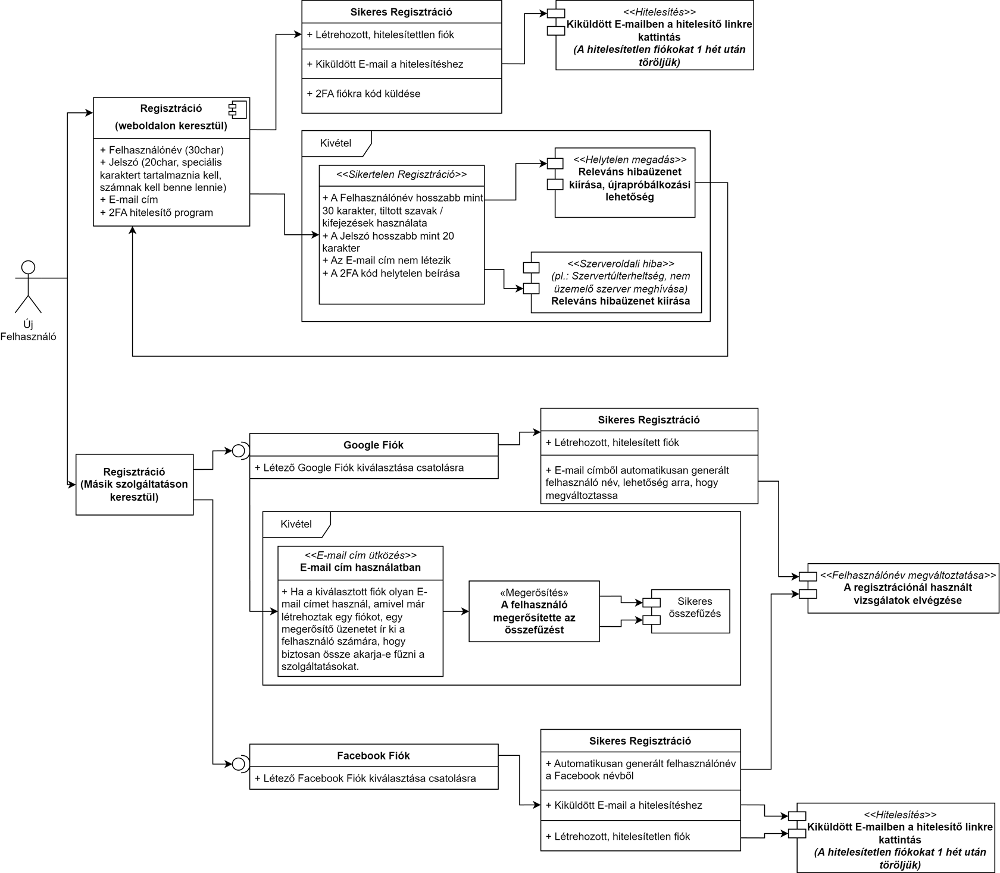
8. ábra: Regisztráció
Maga a regisztráció folyamata egy 2 lépcsős rendszerből áll, ahol elsőként a felhasználó választhat a regisztrációs menetek közül:
· Weboldalas: A weboldalas regisztráció esetén a felhasználót végigvezetjük a folyamaton, ahol is:
v Meg kell adnia az e-mail címét, jelszavát, és felhasználónevét.
v A felhasználó által megadott e-mail címre küldött hitelesítő linkre rákattintva a fiókját elkönyveljük igazinak. Erre a lépésre azért van szükség, hogy a bot-os támadások ellen védjük a weboldalunkat. Egy hitelesítetlen fiókot a hitelesítő e-mail kiküldésétől számítva 1 hét után törlünk.
v (opcionális) Mi lehetőséget nyújtunk a kétlépcsős biztonság bekapcsolására is. A felhasználónak be kell szkennelnie egy QR-kódot az Authy nevű applikációba, mivel az Authy API mellett döntöttünk kétlépcsős hitelesítés szempontjából. Miután a kódok sikeresen legenerálódnak, a felhasználót megkérjük, hogy egyszer üssön be egy helyes kódot a megerősítéshez. Az Authy API-ról majd a 10-es pontban olvashat többet.
· Más támogatott szolgáltatáson keresztül: Ezen opciók közé tartozik a Google és a Facebook regisztráció; mindkettőhöz az OAuth protokollt, valamint a Google és Facebook által megírt bejelentkezési API-kat használjuk (ezekről bővebb leírás található a 10-es pontban). Fontos megemlíteni, hogy míg a Google-ön keresztüli regisztráció rögtön hitelesíti is a fiókot, addig a Facebook-on keresztül történő nem. Így a Facebook regisztráció után a felhasználót meg kell kérnünk a hitelesítési folyamat végrehajtására.
A regisztráció során előfordulhatnak kivételek, amiknek a kezelését az ábrán is részleteztük. Szerveroldali hibákból eredő sikertelen próbálkozás esetén a felhasználónak nem adunk újra próbálkozási lehetőséget, mivel ez mindig hibához vezetne; helyette egy általános bocsánatkérő üzenet jelenik meg, amiben leírjuk, hogy a mi oldalunkon van a hiba, tudunk róla (az események naplózása miatt) és dolgozunk rajta. A ,,Releváns hibaüzenet kiírása”-t akképpen kell értelmezni, hogy a lefuttatott vizsgálatok alapján milyen hibát találtunk, és egy, az arra már megírt hibaüzenetet jeleníti meg az applikáció (pl.: ,,Felhasználónév túl hosszú.”, ,,A jelszó nem tartalmaz kis- és nagybetűt.”, ,,E-mail cím nem létezik.”, stb.).
A regisztráció mellett a második legfontosabb lépés az applikációnk használatához a bejelentkezés. A bejelentkezést sütik használatával bonyolítjuk le és egy session-be helyezzük. A felhasználónak a bejelentkezésnél egyértelműen azok a lehetőségei vannak, mint amit a regisztrációnál felhasznált. A bejelentkezés folyamatát rajzoltuk meg a 9. ábrán.
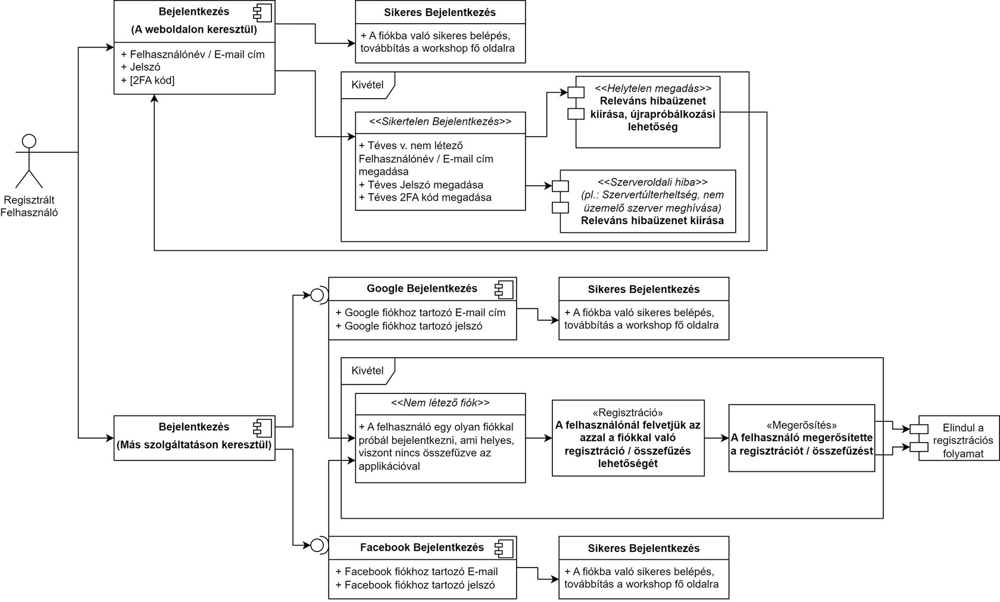
9. ábra: Bejelentkezés
Ha a felhasználónak be van kapcsolva a kétlépcsős autentikáció, úgy havonta egyszer megkérjük, hogy igazolja annak tényét, hogy még mindig ő van a fiók birtokában. Ezt egy bejelentkezés utáni felugró ablak fogja vele közölni, ami kéri majd az Authy-n generált kód beütését. További biztonsági intézkedéseinkhez tartozik az is, hogy ha a bejelentkezés 5-nél többször sikertelenül végződik, akkor a felhasználó fiókját zároljuk arra a napra; ez azt biztosítja, hogy amennyiben fiókba való betörés történik, a felhasználó értesüljön és legyen ideje reagálni. Amennyiben a felhasználó elfelejtette volna a jelszavát, mi adunk rá lehetőséget, hogy azt megváltoztassa egy e-mail-ben kiküldött link segítségével. A linkre kattintva a felhasználót átirányítjuk egy oldalra, ahol szimplán csak kétszer be kell ütnie egy új jelszót. Ez az oldal ugyanazokat a vizsgálatokat végzi el, mint a regisztrációnál.
Ez a lépés hasonlóan a sütik használatával történik. A felhasználó kijelentkezésekor a létrehozott session megszűnik (invalidáljuk), így nem tud visszalépni egy olyan helyre (pl. a felhasználói fiók beállításaiba), ahol bejelentkezett állapot szükséges. Ezt mind a felhasználó biztonságának megőrzése érdekében csináljuk. Kijelentkezés után a felhasználót visszadobjuk a bejelentkezési oldalra, hogy ha véletlenül nyomott volna rá, akkor gyorsan vissza tudjon lépni.
A felhasználói felülettel szemben elvárjuk, hogy intuitív legyen. Az intuitív használatot elősegíti, ha:
· A weboldal megjelenítése konzisztens. A ,,villanykapcsolók” központi helyet foglalnak el és vizuálisan egyformák. A hasonló műveletek elvégzése ugyanolyan módon történik.
· Az elrendezés logikus felépítést követ. A UI elemek funkciója ránézésre felismerhető, az egymástól eltérő részek jól megkülönböztethetők.
· A UI törekszik az egyszerűségre. A képernyő nincsen túlzsúfolva, az irreleváns információk kiszűrésre kerülnek. Az interfész nem hagyatkozik a felhasználó rövid távú memóriájára.
Szeretnénk, ha a Crafting Table kezelése egy új felhasználó számára sem okozna gondot. Éppen ezért megköveteljük az alábbiakat:
· A platform különböző részeinek első használatakor jelenjen meg egy varázsló, amely a segítségnyújtás alatt az előtérben helyezkedik el, és amely végigvezeti a felhasználót az adott lépéseken. Ezeket legyen lehetőség utólag is visszanézni.
· A szöveges útmutatók legyenek rendszerezve egy helyen, a bejegyzések idővel folyamatosan bővüljenek.
· Minden UI elem mellett szerepeljen egy ,,?” ikon, ami egy rövid leírást ad annak működéséről.
· A program adjon apró tippeket és tanácsokat az egyes funkciók hatékony alkalmazásához.
· Jártas felhasználók legyenek képesek az oktatóanyagok és tippadások teljes átugrására.
Fontos számunkra, hogy a Crafting Table-t a korlátozott képességűek is hátrányok nélkül tudják használni. A hozzáférhetőségi követelmények a teljesség igénye nélkül:
· Gyengénlátóknak:
v A megjelenítéshez beállítható magasabb kontraszt.
v Igény szerint nagyobbra vehető a betűméret.
v Bizonyos színek megváltoztathatók a színtévesztés csökkentésére.
v A narrátor bekapcsolásával bármilyen szöveg felolvasható.
· Hallássérülteknek:
v Bármilyen esemény vagy művelet leírása feliratok formájában olvasható.
v A hangok átirányíthatók egyetlen csatornára.
v Az értesítések láthatósági ideje meghosszabbítható.
· Mozgáskorlátozottaknak:
v Módosítható a UI elemek és az irányítás érzékenysége.
v A weboldal egér hiányában is használható.
v Több beviteli eszköz is támogatott.
A hozzáférhetőséget az Alkalmazott szabványok című fejezetben még érinteni fogjuk.
A hibakezelést a felhasználó számára egyértelmű módon kell végezni. A hibaüzenetek feleljenek meg a következő szempontoknak:
· Az üzenet tartalmazza a hiba tömör leírását, egyszerűen és pontosan megfogalmazva.
· Megjelenését kísérje hallható vagy látható jelenség, amely lehet pl. egy rövid sípoló hang, vagy a hibaüzenet átmeneti villogtatása.
· Rejtse el a felhasználók elől a technikai adatokat (hibakódokat). Ne alkalmazzon szükségtelenül informatikai szakkifejezéseket.
· Adjon konstruktív jellegű utasításokat azt illetően, hogy az esemény bekövetkeztével mi a teendő, a hiba milyen lépések követésével szüntethető meg.
A rendszerrel szemben támasztott egyik lényeges követelmény az állandó elérhetőség. A Crafting Table platform elérhetőségének az idő előrehaladtával folyamatosan javulnia kell. A rendelkezésre állás konkrét paraméterei:
v az oldal legalább 80%-ban legyen elérhető,
v a karbantartások időtartama ne haladja meg a 4 órát.
· A termék piaci megjelenését (v1.0) követően:
v az oldal legalább 99%-ban legyen elérhető,
v a karbantartások időtartama ne haladja meg a 1,5 órát.
A karbantartásokra a következő előírások vonatkoznak:
· A szerverek tervezett leállásáról szükséges a felhasználókat előzetesen értesíteni. Az értesítések kiküldésének határideje a karbantartást megelőző 1 hét.
· 24 órával közvetlenül az üzemszünet előtt induljon el egy időzítő. Az időzítő óránként egyszer jelezze a felhasználóknak, hogy a szervermunkálatok mikor kezdődnek.
· 1 órával közvetlenül az üzemszünet előtt az időzítő módosítsa a viselkedését: az emlékeztetők 5 perces gyakorisággal tűnjenek fel, az utolsó 10 percben pedig a visszaszámlálás másodperces pontossággal legyen látható.
· A karbantartások ideje alatt a teljes szolgáltatás szünetel, ezért semmilyen funkció használatát nem kell biztosítani.
A Crafting Table platformnak jó hibatűrő képességgel kell rendelkeznie. Arra számítunk, hogy a kezdeti időszakban fellépő kritikus hibák aránya sokkal magasabb lesz, mint a későbbiek folyamán, ezért átmenetileg alacsonyabb hibatűrést is elfogadunk. A megbízhatóság kifejezésére az MTBF (Mean Time Between Failures, hibák között eltelt átlagos idő) és MTTR (Mean Time To Repair, egy hiba utáni javítás átlagos ideje) mutatókat alkalmazzuk. A követelmények számszerűsítve:
· Early access időszak alatt:
v 1 éves időszakot vizsgálunk (8.760 óra),
v kritikus hiba havonta egyszer lép fel, éves szinten 12 alkalommal,
v a javítások átlagosan 8 órát (480 perc) vesznek igénybe,
v MTBF = 730 óra,
v MTTR = 40 perc.
· A termék piaci megjelenését (v1.0) követően:
v 1 éves időszakot vizsgálunk (8.760 óra),
v kritikus hiba negyedévente lép fel, éves szinten 4 alkalommal,
v a javítások átlagosan 1 órát (60 perc) vesznek igénybe,
v MTBF = 2.190 óra,
v MTTR = 15 perc.
Mivel a hibák előfordulását meglehetősen nehéz előre pontosan kiszámítani, ezért a fenti adatokat hozzávetőlegesen becsültük.
Úgy véljük, hogy a platform teljesítményének egyik legfontosabb szempontja a gyorsaság. A válaszidőket a kritikus funkciók esetében adjuk meg, megállapításukhoz pedig figyelembe vettük az itt található ajánlásokat. Ezek alapján a sebességre vonatkozóan a következő feltételeknek kell teljesülnie:
· weboldal betöltési ideje: 2-3 sec, legrosszabb esetben 5 sec,
· várakozási idő mérkőzéshez csatlakozáskor:
v ingyenes felhasználók: legfeljebb 2 perc,
v előfizetők: átlagosan 1 sec (ideális esetben azonnal),
· mérkőzések késleltetési ideje (külső tényezőket leszámítva): legfeljebb 100 msec,
· editor műveletek válaszideje: átlagosan 50 msec,
· workshop műveletek (pl. keresés, rendezés, szűrés) válaszideje: átlagosan 1 sec, de legfeljebb 2 sec.
A kapacitásra az alábbi megszorításokat tesszük:
· A weboldal legyen képes egyidejűleg maximum 10.000 felhasználót kiszolgálni túlterheltség idejében (jellemzően késő délután és este).
· Hype időszak alatt a szerverek legyenek ,,túlméretezve” (50.000 ÷ 100.000 felhasználó).
· Az előfizetőknek (arányuk várhatóan 10% és 30% közé esik) legyen legalább 2x-es sávszélesség biztosítva.
A Crafting Table igénybevételéhez egyáltalán nem szükségesek a legújabb számítástechnikai komponensek, tehát a futtatáshoz egy régebbi hardveres felszereltség is elegendő. A minimális rendszerkövetelményeket az x. táblázatban gyűjtöttük össze.
|
|
Minimum |
Ajánlott |
|
Processzor |
Dual-core, 2,6 GHz |
Quad-core, 3,2 GHz |
|
Memória |
4 GB RAM |
8 GB RAM |
|
Grafika |
DirectX 10 |
DirectX 11 |
|
Megjelenítés |
1280 × 720 (HD) |
1920 × 1080 (Full HD) |
|
Tárhely |
– |
– |
|
Hálózat |
Szélessávú internetkapcsolat (100 Mbps) |
Szélessávú internetkapcsolat (250 Mbps) |
2. táblázat: Crafting Table rendszerkövetelményei
Az alkalmazás jellegéből eredően azonban sokkal lényegesebb, hogy az ügyfél egy naprakész böngészőt használjon, és hogy stabil internetkapcsolattal rendelkezzen. A Crafting Table működését biztosítani kell valamennyi népszerű böngésző esetében, mint pl. Google Chrome, Firefox, Microsoft Edge.
Mobileszközöknél az egyetlen lényeges kikötés, hogy a felhasználó egy támogatott operációs rendszerről nyissa meg az applikációt:
· Android: legalább 12-es verzió ("Snow Cone"),
· iOS: legalább 17-es verzió.
A Crafting Table nyelvi kritériumai:
· A weboldalon UTF-8 karakterkódolást kell alkalmazni.
· Hivatalosan a következő nyelveket fogjuk támogatni: angol, német, magyar.
· A weboldalnak a hivatalos nyelveken kívül más nyelveken is megtekinthetőnek kell lennie, erre viszont csak automatikus fordítással vagy AI által generált módon lesz lehetőség.
· Létre kell hozni egy olyan felületet, ahol a felhasználók önkéntes alapon beküldhetik a saját fordításaikat a lokalizáció bővítéséhez. Az így beérkező fordításokat automatikusan el kell fogadni.
A platformon történő tevékenységeket, és az ahhoz kapcsolódó adatokat rögzíteni kell. A keletkező log fájlok lehetővé teszik a rendszer felügyeletét, megkönnyítik a hibaelhárítást, és növelik az oldal biztonságát. Szükséges az alábbi események naplózása:
· szerverműködés,
· mérkőzések történései,
· felhasználók és technikai személyzet tevékenységei,
· editor-ban végrehajtott műveletek,
· workshop-ba feltöltött tartalmak életciklusa,
· stb..
A megfelelő log fájlok megtekintését a jogosult személyek számára engedélyezni kell, amely bizonyos esetekben kiterjed a közönséges felhasználókra is (pl. a játékosok visszakereshetik egy kockadobás eredményét, vagy egy megosztott társasjátéknak a szerzője láthatja, hogy mikor változtatta meg a játékleírást). A naplózásra továbbá előírjuk még, hogy verziókövető módon kerüljön kivitelezésre.
A fejlesztés során ügyelni kell a következő kompatibilitási szempontokra:
· A Crafting Table működését ne befolyásolja a választott böngésző típusa. A tesztelést mindig az aktuális kiadású, 64 bites verziójú böngészőkön végezzük.
· A Crafting Table mobileszközök esetén legyen telepíthető Android és iOS rendszerekre. A tesztelést csak az aktuálisan támogatott verziókon végezzük.
· A weboldal megjelenítése legyen felbontástól és kijelzőmérettől független.
· Mivel a projekthez teljesen új kódbázist hozunk létre, ezért nem szükséges házon belüli legacy szoftverrel összeegyeztetni.
Az implementációra és technológiákra vonatkozóan további megszorítások érvényesek:
· A Crafting Table programozási nyelve asztali környezetben JavaScript, az Android-os applikációnál Java, az iOS applikációnál pedig Swift.
· A JavaScript, Java és Swift kódokat a Visual Studio Code fejlesztői környezetben írjuk.
· Frontend oldalról a React.js könyvtárat, esetlegesen a Vue.js keretrendszert fogjuk használni.
· Backend oldalról a Node.js környezetet vesszük igénybe az Express.js keretrendszerrel kiegészítve.
· Adatbázis-kezelést a MySQL rendszer segítségével fogunk megvalósítani.
· A Crafting Table-be különböző interfészeket kell beépíteni. Ezeket a Felhasznált kész komponensek című fejezet bővebben taglalja.
A projekt megvalósításának eszközei:
· Értekezletek lebonyolítására a Microsoft Teams-et vesszük igénybe.
· Verziókövető rendszerként a GitHub-ot fogjuk alkalmazni.
· Az agilis módszertant fogjuk követni, azon belül a Scrum keretrendszer alapján fogunk eljárni. Projektmenedzsmentünk eszköze a Jira lesz.
9. Online dokumentáció és help rendszer
A felhasználói dokumentációval kapcsolatos elvárások egy részét korábban már megfogalmaztuk. Az online kézikönyvre vonatkozó követelmények a Vízió dokumentumban, azon belül a ,,Dokumentációkkal kapcsolatos követelmények felhasználói oldalról” című fejezetben megtalálhatók. Egy új felhasználó első Crafting Table tapasztalatát javító előírásokat pedig a Tanulhatóság című fejezetben rögzítettük. A továbbiakban ezt a követelményrendszert fogjuk kiegészíteni.
· Az online kézikönyvben legyen megtalálható az összes kontextusfüggő segítség (?-es leírások, tippek és trükkök). Szintén itt legyen elérhető minden varázslós tananyag.
· A Crafting Table weboldalának tartalmaznia kell egy GYIK részleget. Ezen a szekción belül a gyakori kérdéseket kategóriákba kell sorolni a gyors megtalálhatóság érdekében. Egy ilyen kategória legalább 10-12 kérdésre adjon választ.
· Legyen lehetőség a segítségnyújtás egyszerű értékelésére, pl. egy igen/nem válasz a „Hasznosnak találta ezt az információt?” kérdésre.
· Az online manuál és GYIK részleg esetén biztosítani kell egy keresősávot. A keresés eredményeiben a megadott kulcsszó legyen kiemelve.
· A szöveges magyarázatok legyenek kibővítve interaktív képernyőképekkel. Többlépéses folyamat bemutatásánál a lépések sorszámai kerüljenek rá az adott ábrára.
· A help rendszer tartalmát rendszeres időközönként frissíteni kell, hogy az információk relevánsak maradjanak.
10. Felhasznált kész komponensek
10.1.1. A választás szempontjai
Az Amazon S3-at választottunk a projektünkhöz, mivel az online társasjáték készítő platformunknál olyan megoldásra van szükségünk, amely biztosítja a nagyobb méretű fájlok tárolását, valamint lehetővé teszi a felhasználók számára, hogy elmentsék és megosszák az elkészített társasjátékaikat. Lényeges szempont, hogy a tárolási rendszer skálázható legyen, hiszen a platform növekedésével egyre több társasjátékot kell majd kezelni mind a tárolás, mind a megosztás terén. Az Amazon S3 egy robusztus, megbízható tárolási megoldást nyújt, amely kiválóan megfelel ezeknek az igényeknek.
Az Amazon S3 (Amazon Simple Storage Service) egy olyan tárolási szolgáltatás, amelyet az Amazon Web Services (AWS) nyújt, és amelyet nagy mennyiségű adat tárolására és elérésére terveztek. Az S3 lehetővé teszi, hogy fájlokat, képeket, videókat és egyéb adatmennyiségeket hatékonyan tároljunk a felhőben, amelyekhez aztán a felhasználók bármikor hozzáférhetnek. A tárolás szerkezete S3 "bucket-okból" áll, amelyek gyakorlatilag olyan tárolókonténerek, ahol az adatokat rendezetten és biztonságosan tárolhatjuk. Ez különösen hasznos, ha nagyobb mennyiségű társasjáték mentési fájljait kell kezelni.
10.1.3. A komponens használatának előnyei
· Skálázhatóság: Az Amazon S3 teljes mértékben skálázható, ami azt jelenti, hogy a kezdeti kicsi tárolási igényektől a nagyobb adatmennyiségig minden probléma nélkül kezelhető. Ahogy nő a platformunk, úgy az S3 igazodik az újabb és újabb társasjátékok tárolásához anélkül, hogy jelentős infrastrukturális fejlesztésre lenne szükség.
· Megosztási lehetőségek: Az Amazon S3 lehetővé teszi a tárolt tartalmak privát vagy publikus megosztását. Ezáltal a felhasználóink dönthetnek úgy, hogy saját játékaikat megosztják másokkal, vagy csak saját céljaikra használják azokat. Az URL-alapú megosztás megkönnyíti a fájlok elérését mások számára.
· Adatbiztonság: Az Amazon S3 adatbiztonsági megoldásai biztosítják, hogy a felhasználók adatai védettek legyenek. AES-256 titkosítást használ, valamint támogatja a felhasználók által vezérelt titkosítást is, így az ügyfelek maguk dönthetik el, hogyan szeretnék kezelni az adataik biztonságát.
· Integráció más AWS szolgáltatásokkal: Az Amazon S3 szorosan integrálható az AWS egyéb szolgáltatásaival, mint például a Lambda vagy a CloudFront, ami lehetőséget nyújt arra, hogy bonyolultabb alkalmazásokat hozzunk létre anélkül, hogy komoly infrastruktúra lenne szükségünk.
Az Amazon S3 árazása rendkívül rugalmas, és csak azért fizetünk, amit valóban felhasználunk. Az alapárak a tárolt adatmennyiségtől függően alakulnak, így kisebb tárolási igény esetén költséghatékonyan lehet elindulni, és ahogy a Crafting Table növekszik, az S3 bármikor skálázható a nagyobb méretű adattárolásra is. Az Amazon az adatforgalomért is külön díjat számít fel, de ez az árazási modell elősegíti az indulás költségeinek minimalizálását. Ez kifejezetten jó megoldás nekünk, mert a kezdeti költségek alacsonyan tartása kritikus fontosságú.
10.1.5. Az integrációs folyamat lépései
Az integrálási folyamat a következő nagyobb lépésekből áll, néhány technikai részlettel kiegészítve:
1. AWS fiók létrehozása: Első lépésként regisztrálnunk kell egy AWS fiókot, ahol hozzáférhetünk az S3 szolgáltatáshoz és generálhatjuk az API-kulcsokat.
2. S3 bucket létrehozása: Az Amazon S3-ban tárolókat kell létrehozni, amelyek az adatok szervezéséért és tárolásáért felelnek. Ez a folyamat egyszerűen elvégezhető az AWS Management Console felületén.
3. Frontend integráció: Az S3 API-jait használhatjuk JavaScript vagy más frontend technológiákkal, így a felhasználók közvetlenül a böngészőjükből tölthetnek fel fájlokat. Ehhez AWS SDK-t vagy egyéb eszközöket vehetünk igénybe.
4. Backend beállítások: A szerveroldali kód segítségével vezérelhetjük az adatok feltöltését, letöltését és törlését. Ehhez használhatunk olyan programozási nyelveket, mint például Python (Boto3 könyvtárral), Node.js vagy Java.
5. Hozzáférési szabályok beállítása: A biztonság érdekében érdemes konfigurálni a hozzáférési jogosultságokat. Az S3-ban lehetőség van IAM (Identity and Access Management) szerepkörök és szabályok beállítására, hogy biztosítsuk az adatok megfelelő védelmét.
Az Amazon S3 egy rendkívül rugalmas és skálázható megoldás, amely segít nekünk a nagyobb méretű fájlok tárolásában és megosztásában, hogy a felhasználóink könnyedén elmentsék és megosszák az általuk készített társasjátékokat. Az S3 stabil alapot jelent a növekedéshez, valamint olyan eszközöket biztosít, amelyekkel hatékonyan kezelhetjük a tárolási és megosztási igényeket, miközben gondoskodunk a felhasználói adatok védelméről.
10.2.1. A választás szempontjai
Az Authy API mellett döntöttünk a projektünkhöz, mivel az online társasjáték készítő platformunk számára olyan Two-Factor Authentication (2FA) megoldásra van szükségünk, amely lehetővé teszi a felhasználók számára, hogy többféle hitelesítési mód közül válasszanak. Az Authy API kiváló módszert kínál az SMS-alapú és az Authenticator alkalmazás-alapú 2FA integrációjára egyaránt. Ezáltal biztosítjuk az ügyfeleknek, hogy a számukra legkényelmesebb hitelesítési módot használhassák, így növelve a biztonságot és a felhasználói elégedettséget.
Az Authy API egy olyan Two-Factor Authentication megoldás, amely a Twilio terméke. Az Authy garantálja, hogy a felhasználók kétféle módon is megerősíthessék a bejelentkezésüket: SMS-alapú azonosító kódok küldésével vagy egy Authenticator alkalmazás segítségével, amely a TOTP (Time-based One-Time Password) protokoll alapján generálja az egyszer használatos kódokat. Ez a rugalmasság nagyon fontos számunkra, mivel a felhasználóinknak szabad választási lehetőséget adunk arra, hogyan szeretnék növelni a fiókjuk biztonságát.
10.2.3. A komponens használatának előnyei
· Rugalmasság: Az Authy módot ad arra, hogy a felhasználók választhassanak az SMS-alapú hitelesítés és az Authenticator alkalmazás között, így mindenki kiválaszthatja a számára legmegfelelőbb opciót. Minden felhasználó más-más preferenciával rendelkezik, és az Authy képes kiszolgálni mindkét típust.
· Könnyű integráció: Az Authy API jól dokumentált és egyszerűen integrálható különböző programozási nyelvekkel, beleértve a JavaScript, Python és PHP nyelveket is. Ezáltal gyorsan és hatékonyan be tudjuk építeni a kétfaktoros hitelesítést a platformunkba.
· Biztonságos hitelesítés: Az Authy API az OAuth 2.0 protokollra épül, és a TOTP kódok generálása teljes mértékben az eszközön történik, amely hozzájárul a felhasználói adatok biztonságához. Az SMS-alapú hitelesítés pedig a Twilio globális hálózatán keresztül valósul meg, a kézbesítés így gyors és megbízható.
Az Authy API használata során a költségek az üzenetek számától és a felhasználási módoktól függenek. Az SMS-alapú hitelesítés díjai az elküldött üzenetek mennyiségével arányosan alakulnak, és befolyásoló tényező még, hogy melyik országba küldjük az SMS-t. Az Authenticator alkalmazás-alapú hitelesítés esetén azonban nincs külön díj az egyes kódok generálására, mivel ezek az alkalmazásban offline módon zajlanak. Az Authy által kínált rugalmas árazásnak köszönhetően a költségeket a Crafting Table növekedésével párhuzamosan tudjuk kezelni, így a kezdeti kiadások alacsonyan tarthatók.
10.2.5. Az integrációs folyamat lépései
Az integrálási folyamat a következő nagyobb lépésekből áll, néhány technikai részlettel kiegészítve:
1. Twilio fiók létrehozása: Első lépésként regisztrálnunk kell egy Twilio fiókot, ahol hozzáférhetünk az Authy szolgáltatáshoz és generálhatjuk az API-kulcsokat.
2. Felhasználói regisztráció: A felhasználók regisztrációjakor lehetőséget kell biztosítanunk számukra, hogy válasszanak az SMS-alapú hitelesítés vagy az Authenticator alkalmazás között. Az Authy API segítségével mindkét opció könnyen beállítható és kezelhető.
3. SMS-alapú hitelesítés: Az Authy API-n keresztül az SMS-alapú hitelesítéshez egy egyszer használatos kódot küldünk a felhasználónak. Ez a kód csak rövid ideig érvényes, a bejelentkezés során ezt kell megadnia.
4. TOTP-alapú hitelesítés: Ha a felhasználó az Authenticator alkalmazást választja, akkor a regisztráció során egy QR-kódot biztosítunk számára, amelyet az alkalmazásban beolvashat. Ez a QR-kód tartalmazza a titkos kulcsot, amely alapján az applikáció generálja a bejelentkezési kódokat.
5. Szerveroldali validáció: Miután a felhasználó megadta a hitelesítési kódot, a szerverünkön ellenőrizni kell annak érvényességét az Authy API segítségével.
Az Authy API kiváló választás a kétfaktoros hitelesítés bevezetésére, mivel lehetőséget nyújt mind az SMS-alapú, mind az Authenticator alkalmazás-alapú hitelesítésre. Ez a rugalmasság a Crafting Table esetén elengedhetetlen, mert a felhasználóink preferenciái eltérőek lehetnek, és mindkét opció biztosításával nagyobb biztonságot és felhasználói elégedettséget érhetünk el. Az Authy API könnyen integrálható, skálázható és költséghatékony, így tökéletesen megfelel a platformunk igényeinek a 2FA megvalósításához.
10.3.1. A választások szempontjai
A Google és Facebook bejelentkezési API-k integrálása mellett döntöttünk a projektünkhöz, mivel az online társasjáték készítő platformunkon szeretnénk egyszerűsíteni a felhasználók részére a regisztrációs és bejelentkezési folyamatokat. A célunk az, hogy a felhasználók a már meglévő Google vagy Facebook fiókjaikkal egyszerűen be tudjanak jelentkezni, így csökkentve a regisztrációs akadályokat és növelve a felhasználói élményt. Ez az ő szemszögükből nézve mérvadó lehet, hiszen sokak számára a kényelmes bejelentkezés határozza meg, hogy milyen könnyen tudják elkezdeni használni a Crafting Table-t. A Google és Facebook hitelesítési szolgáltatások ezt lehetővé teszik az EOF-nak.
10.3.2. A komponensek hátterei
A Google Sign-In a Google Identity Services része, amely által a felhasználók egyszerűen és biztonságosan bejelentkezhetnek a Google fiókjukkal a platformunkon. A hitelesítési folyamat során a Google generál egy azonosító token-t, amelyet a szerverünk validálhat, ezzel biztosítva, hogy a felhasználói adatokat megfelelően kezeljük és biztonságban tartsuk. Ez gyors hozzáférést nyújt a felhasználóknak az alapvető adatokhoz, mint például a nevük és e-mail címük.
A Facebook Login hasonló megoldást kínál a Facebook fiókokkal való bejelentkezéshez. A Facebook Graph API és a Facebook SDK segítségével a felhasználók gyorsan és egyszerűen csatlakozhatnak a Crafting Table-höz anélkül, hogy új fiókot kellene létrehozniuk. A Facebook szintén generál egy azonosító token-t, amelyet a szerverünk ellenőrizhet, és ezen keresztül hozzáférhetünk a felhasználói adatokhoz, ha az ügyfél engedélyt ad rá.
10.3.3. A komponensek használatának előnyei
· Kényelem a felhasználóknak: Az egyik legnagyobb előnye ezeknek az API-knak, hogy rendkívül kényelmes megoldást nyújtanak a felhasználóknak. A Google vagy Facebook fiókkal történő bejelentkezés segít elkerülni a hosszadalmas regisztrációs folyamatokat, és csökkenti annak az esélyét, hogy a felhasználók elhagyják az oldalt a regisztráció során.
· Biztonság: Mindkét szolgáltatás az OAuth 2.0 protokollra épül, amely egy iparági szabvány a biztonságos hitelesítéshez. A jelszókezelést teljesen a Google vagy a Facebook végzi, minimalizálva ezzel a platformunkon történő adatkezelés kockázatait. Ez különösen fontos adatvédelmi szempontokból.
· Gyors regisztráció és magasabb konverzió: A social login használatával a regisztrációs folyamat lényegesen rövidebb, ami jelentősen növeli a felhasználók konverziós arányát. A felhasználók egyetlen kattintással hozzáférhetnek az oldalhoz, a szükséges adatokat pedig automatikusan átvesszük a Google vagy Facebook fiókból.
Mind a Google, mind a Facebook bejelentkezési szolgáltatása ingyenesen elérhető a fejlesztők részére. Ez azt jelenti, hogy a használatukért önmagában nem kell díjat fizetnünk, ugyanakkor figyelembe kell venni a Google Cloud Console vagy Facebook fejlesztői konzol használatához kapcsolódó esetleges egyéb költségeket, ha a Crafting Table más szolgáltatásokat is igénybe vesz. Az OAuth integráció és az API-használat azonban alapvetően ingyenes, következésképpen ez egy gazdaságos módszer a felhasználói hitelesítés kezelésére.
10.3.5. Az integrációs folyamat lépései
Az integrálási folyamat a következő nagyobb lépésekből áll, néhány technikai részlettel kiegészítve:
1. API-kulcsok és hitelesítési adatok beszerzése: Első lépésként létre kell hoznunk egy projektet a Google Cloud Console-ban és a Facebook for Developers oldalon. Itt megkapjuk az OAuth kliensazonosítókat, az App ID-t és az App Secret-et, amelyeket az alkalmazásunkban használni fogunk.
2. Frontend integráció: A Google és a Facebook biztosít JavaScript SDK-kat, amelyeket beépíthetünk a weboldalunkba, hogy hozzáadjuk a bejelentkezési gombokat.
3. Szerveroldali validáció: Miután a felhasználó sikeresen hitelesítette magát, a kapott token-t a szerverünkre küldjük, ahol validáljuk annak érvényességét. Ehhez a Google és Facebook által biztosított API végpontokat alkalmazzuk.
4. Felhasználói fiókok kezelése: Ha a felhasználó először jelentkezik be a Google vagy Facebook segítségével, automatikusan létrehozunk egy új fiókot számára a kapott adatok alapján. Ha már létezik egy felhasználói fiók az adott e-mail címmel, összekapcsoljuk a meglévő fiókot a social login opcióval.
A Google és Facebook bejelentkezési API-k integrációja rendkívül fontos lépés a felhasználói élmény javítása érdekében. A kényelmes és gyors bejelentkezési lehetőség növeli a felhasználói elégedettséget, csökkenti a regisztrációval kapcsolatos frusztrációt, illetve biztonságos módot ad a felhasználói hitelesítésre. Ezzel a megoldással hatékonyan növelhetjük a Crafting Table-re érkező felhasználók számát, és biztosíthatjuk számukra a hozzáférést a szolgáltatásainkhoz anélkül, hogy kompromisszumot kellene kötni a biztonság terén.
10.4.1. A választás szempontjai
A Stripe-ot választottuk a projektünkhöz, mivel az online társasjáték készítő platformunk előfizetési rendszeréhez egy rugalmas és jól bevált fizetési megoldásra van szükségünk. Fontos számunkra, hogy a rendszer támogassa az előfizetési modellünket, hiszen a felhasználói élmény és a különböző igények kezelése érdekében olyan megoldást szeretnénk választani, amely képes alkalmazkodni a változó feltételekhez. Számos kihívást látunk előre, például, hogy a felhasználók különböző fizetési módokat preferálnak, illetve szükség lehet a fizetések egyszerű kezelésére, a késések és hibák minimalizálására. Emellett a növekvő felhasználói bázis miatt rugalmas és skálázható megoldásra van szükség, amely képes kezelni a terhelés növekedését anélkül, hogy a fizetési folyamatok lassulnának vagy bonyolultabbá válnának. Ez az API ideális választásnak tűnik az EOF-nak, hiszen egyszerű integrálhatósága mellett széleskörű eszközöket nyújt az ismétlődő fizetések kezeléséhez, ami létfontosságú egy előfizetés-alapú modellnél.
A Stripe egy olyan online fizetési feldolgozó szolgáltatás, amely többek között lehetőséget nyújt előfizetések és ismétlődő fizetési modellek kezelésére, biztonságos fizetési infrastruktúrával. Platformunkon ezáltal havi vagy éves előfizetéseket tudunk ajánlani a felhasználóknak különböző fizetési módok támogatásával, beleértve a kártyás fizetést és a digitális pénztárcákat, mint az Apple Pay és Google Pay. A Stripe rendszere lehetővé teszi, hogy zökkenőmentesen integráljuk ezeket a különböző fizetési módokat, ami azért fontos, mert a felhasználók preferenciái változóak lehetnek. Például vannak, akik inkább a bankkártyás fizetést részesítik előnyben, míg mások kényelmesebbnek találják a digitális pénztárcák használatát. Ez a sokféleség növeli a felhasználói élményt és csökkenti a lemorzsolódást is, hiszen mindenki a számára legmegfelelőbb módon fizethet, ami hosszú távon nagyobb elégedettséghez és hűséghez vezet.
10.4.3. A komponens használatának előnyei
· Könnyű integrálhatóság: Kiválóan működik együtt különböző rendszerekkel, így gyorsan beépíthetjük a projektünkbe.
· Biztonság: Megfelel a legszigorúbb adatvédelmi és biztonsági szabványoknak (például PCI DSS), így megbízhatóan tudjuk kezelni a felhasználói adatokat. Ez a magas szintű biztonság segít abban, hogy a felhasználók megbízzanak a platformunkban, és biztonságban érezzék magukat a tranzakciók során.
· Nemzetközi elérhetőség: Több, mint 135 pénznemet támogat, ami előnyös, ha a platformunkat nemzetközi felhasználóknak is szeretnénk elérhetővé tenni.
· Testreszabhatóság: Az előfizetési rendszert könnyen az igényeinkre szabhatjuk az API-n keresztül.
A Stripe használatának költségei viszonylag egyszerűek: a legtöbb tranzakció esetén a Stripe 2,9%-ot + 30 centet von le tranzakciónként. Ez a díjszabás versenyképes a hasonló fizetési megoldásokhoz képest, például a PayPal vagy a Braintree díjaival összehasonlítva. Mivel ezek a költségek átláthatóak és könnyen kalkulálhatók, a Stripe különösen előnyös lehet startup-ok és kisvállalkozások számára, ahol fontos a költségek kordában tartása. Az alacsony kezdeti költségek hozzájárulnak ahhoz, hogy a Crafting Table gyorsan elinduljon, miközben a díjszabás a növekvő tranzakciószám mellett is fenntartható marad. Ez az árazás garantálja nekünk, hogy inkább a növekedésre és a felhasználói élmény fejlesztésére összpontosítsunk, mintsem a tranzakciós költségek optimalizálására.
10.4.5. Az integrációs folyamat lépései
Az integrálási folyamat a következő nagyobb lépésekből áll, néhány technikai részlettel kiegészítve:
1. Regisztráció a Stripe-ra: Itt hozzáférést kapunk a teszteléshez és éles működéshez szükséges API-kulcsokhoz.
2. Előfizetési csomagok létrehozása: A Stripe Dashboard felületén tudjuk megtenni, ahol beállíthatjuk az egyes csomagok díjait és az előfizetési időtartamokat.
3. Frontend integráció: Itt használhatjuk a Stripe által biztosított "Checkout" vagy "Elements" komponenseket, amelyek egyszerűen módosíthatók.
4. Backend beállítások: Szükségünk lesz szerveroldali kódra, hogy kezelje a tranzakciókat és ellenőrizze a felhasználók fizetési adatait.
5. Webhook-ok beállítása: Ezek a Stripe eseményértesítései, amelyekkel automatikusan kezelhetjük a fizetési sikerességet vagy esetleges kudarcokat.
A Stripe rugalmas és megbízható választás, amely segít nekünk a fizetési folyamatokat és az előfizetési modellünket egyszerűen menedzselni. Egy ilyen erős alapra építve jobban fókuszálhatunk a Crafting Table fejlesztésére, és gyorsabban juttathatjuk el a felhasználókhoz a terméket.
11.1. Felhasználói interfészek
A mi programunkban fontos az intuitív, kidolgozott, mégis egyszerű interfész implementálása, hiszen az applikáció maga nem a programozóknak készül, hanem azok számára, akik inkább vizuálisan szeretnék megvalósítani az ötleteiket, és nem annyira jártasak a programozás terén. A Crafting Table fő része ugyanis az Editor (Társasjáték készítő) lenne, viszont nem lenne sok értelme létrehozni egy játékot, amit utána nem tudna ugyanazon az applikáción belül játszani is. Így a felhasználói táborunkat két nagy részre tudjuk osztani: A játékosokra és a készítőkre. A készítők inkább az Editor felületet, míg a játékosok a Játszóteret használnák.
A társasjátékkészítő interfész hasonló elrendezésű lenne, mint mondjuk egy Photoshop vagy Blender, hogy a felhasználóban egy ismerős érzést keltsünk. Az Editor terveit a 10. ábrába rajzoltuk be.
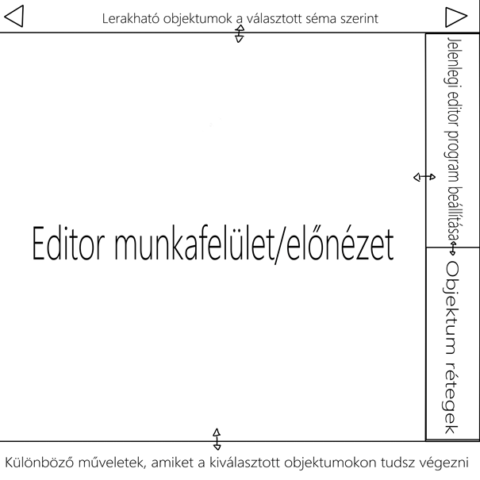
10. ábra: Az Editor UI tervei
Az ábra ugyan kezdetleges, viszont a lényeget elmondja:
· A felhasználó elsőnek is kiválaszt egy sémát, ami szerint el szeretné készíteni a társasjátékát. Ez a program számára egyfajta szűrőt ad, ami megmondja neki, hogy mely objektumokat és azokra mely műveleteket engedheti át a felhasználó számára, továbbá jeleníthet meg mint opció.
· Ezek az objektumok egy görgethető sávban jelennének meg legfölül, amiből ezután a munkafelületre át tudná húzni őket, ahol is majd tudja azokat helyezgetni és kijelölni.
· Amint egy objektum lehelyezésre kerül, az megjelenik jobb alul mint egy ,,réteg”. Itt szintúgy ki lehet jelölni az objektumokat egyenként, át lehet őket nevezni, és mappákba lehet őket rendezni.
· Ha egy objektum kijelölésre kerül, azon objektumhoz tartozó műveletek legalul fognak megjelenni, ezek szintúgy kattintás útján vagy programozható gyorsbillentyűkkel lesznek elérhetőek.
· Végül egy művelet kiválasztása után ahhoz a művelethez tartozó beállítások jobb felül kerülnek megjelenítésre, itt lehet finomítani az eszközökön annak érdekében, hogy a felhasználó teljes személyre szabhatóságot élvezzen. Az ablakok méretei mind állíthatók, ezzel is fokozva a kényelmet.
Említettük a gyorsbillentyűket: a felhasználó számára lehetőség nyílik egy ablakon belül különböző gyorsbillentyűk beállítására, ami a készítés menetét megkönnyebbíti, felgyorsítja és élvezetesebbé teszi. A csapaton belül sokunknak szinte mindennapos a gyorsbillentyűk használata, ezért felismerjük ezek fontosságát.
A játékosok számára a fő használati oldal a Játszótér lenne, ami minden olyan eszközt megadna a játékosok számára, ami az elindított társasjáték játszásához szükséges. A Játszótér terveit a 11. ábrán vázoltuk fel.
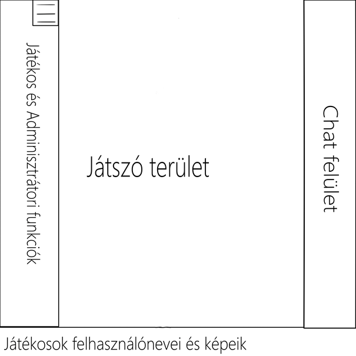
11. ábra: A Játszótér UI tervei
Az ábrán látható funkciók a következők:
· A játékosok felhasználóneveik a profilképükkel ellátva alul jelennek meg egymás mellett. Ha egy játékos webkamerával csatlakozik be a játékba, akkor az a profilképük helyett jelenik meg, és egy kis mikrofon szimbólum indikálná, hogy az illető beszél-e.
· A bal oldalt jelennek meg a releváns eszközök, amiket használhatnak egy játék során. Ilyen lehet pl.:
v kiválasztó funkció, ahol a játékos szigorúan lerakott objektumokat választ ki;
v rajzoló funkció, amivel a táblán tud rajzolni, ez lehet mind vektoros, mind szabadkézi;
v kockadobás: itt lehet kiválasztani azt, hogy hány oldalú és hány darab kockát szeretne az illető dobni.
· Ezenkívül adminisztrációs funkciók is idekerülnek, amiket csakis a Host tudna használni. Ezek közé tartozna pl. egy játékmenet megállítása, játékosok némítása, kirúgása vagy letiltása.
· Végül a jobb oldalt egy chat részleg helyezkedik el, ami egy valós idejű csevegőszoba, ahol a játékosok üzeneteket és képeket küldhetnek egy megosztott felületre.
A hardveres interfészek a Crafting Table esetében nem értelmezhetők.
11.3. Szoftveres és kommunikációs interfészek
Lásd: Felhasznált kész komponensek című fejezet.
Az EOF-ra és a Crafting Table-re természetesen vonatkoznak jogi, biztonsági, pénzügyi stb. előírások, melyek betartása kötelező. Csapatunk emellett olyan szabványok útmutatását is követni fogja, amellyel meglátásunk szerint a termék minősége még tovább javítható.
12.1. Kötelezően alkalmazandó szabványok
[1] 1997. évi CLV. törvény: A fogyasztói érdekek védelméről, valamint az érvényesítésükhöz szükséges intézményrendszer továbbfejlesztéséről szóló törvény.
[2] 1999. évi LXXVI. törvény: A szerzői jogokról és a szerzői joghoz kapcsolódó jogok közös kezeléséről szóló törvény.
[3] 2001. évi CVIII. törvény: Az elektronikus kereskedelmi szolgáltatások, valamint az információs társadalommal összefüggő szolgáltatások egyes kérdéseiről szóló törvény.
[4] 2005. évi XC. törvény: Az elektronikus információszabadságról szóló törvény.
[5] 2007. évi CXXVII. törvény: Az általános forgalmi adóról szóló törvény.
[6] 2008. évi XLVII. törvény: A fogyasztókkal szembeni tisztességtelen kereskedelmi gyakorlat tilalmáról szóló törvény.
[7] 2008. évi XLVIII. törvény: A gazdasági reklámtevékenység alapvető feltételeiről és egyes korlátairól szóló törvény.
[8] 2009. évi LXXXV. törvény: A pénzforgalmi szolgáltatás nyújtásáról szóló törvény.
[9] 4/2009. (I. 30.) NFGM–SZMM együttes rendelet: A termékek eladási ára és egységára, továbbá a szolgáltatások díja feltüntetésének részletes szabályairól szóló rendelet.
[10] 23/2014. (VI. 30.) NGM rendelet: A számla és a nyugta adóigazgatási azonosításáról, valamint az elektronikus formában megőrzött számlák adóhatósági ellenőrzéséről szóló rendelet.
[11] 45/2014. (II. 26.) kormányrendelet: A fogyasztó és a vállalkozás közötti szerződések részletes szabályairól szóló rendelet.
[12] Általános adatvédelmi rendelet (GDPR), EU 2016/679: A természetes személyeknek a személyes adatok kezelése tekintetében történő védelméről és az ilyen adatok szabad áramlásáról szóló rendelet.
[13] Geo-blocking rendelet, EU 2018/302: A belső piacon belül a vevő állampolgársága, lakóhelye vagy letelepedési helye alapján történő indokolatlan területi alapú tartalomkorlátozással és a megkülönböztetés egyéb formáival szembeni fellépésről szóló rendelet.
[14] Google Play Fejlesztői terjesztési megállapodás: A Google Play Store-on történő alkalmazás-közzétételhez teljesítendő feltételek.
[15] App Review Guidelines: Az Apple App Store-on történő alkalmazás-közzétételhez teljesítendő feltételek.
12.2. Választás alapján alkalmazott szabványok
[16] Web-akadálymentesítési irányelvek (WCAG) 2.2: Széleskörű ajánlásokat foglal magában a webtartalom minél könnyebb eléréséhez. Az irányelvek követésével a tartalom széles körben lesz elérhető az olyan fogyatékkal élők számára, mint a vak és gyengénlátó, a siket és hallássérült, a tanulási nehézségekkel küzdő, az értelmileg visszamaradott, a mozgássérült, a beszédhibával rendelkező, a fényre érzékeny és a mindezek kombinációjával küzdő emberek.
[17] Anyagszerű megjelenéssel kapcsolatos irányelvek (Material Design 3): Egy Google által létrehozott, Android-orientált tervezési nyelv, melynek fő célja, hogy természetes hatásokkal támogassa a digitális tartalomfogyasztás és eszközhasználat élményét.
[18] Emberi interfésszel kapcsolatos irányelvek (Human Interface Guidelines for iOS 17): Egy átfogó útmutató az Apple platformjaira tervezők és fejlesztők számára, melynek célja a felhasználói élmény javításának széleskörű elérhetősége.